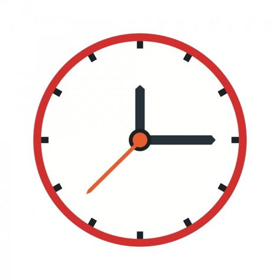

CONSULTAS
CONSULTAS
La revolución solar es una de las lecturas predictivas más importantes y se la llama también carta solar anual porque la lectura se inicia cuando, desde la perspectiva de la Tierra, nuestro sol regresa a su posición natal, una vez completada su órbita alrededor del sol.
El paso de los planetas sobre las posiciones de la carta se denomina tránsitos. La interpretación de los tránsitos es uno de los antiguos métodos de pronóstico que hablan de los temas de la vida que son particularmente importantes en un momento dado.
La carta natal o astral es el mapa que ayuda a cada persona a entender sus características, según el movimiento de los astros en el momento en el que nació. La astrología es un campo de estudio en el que muchas personas creen y confían.
Si tenes algún problema que quieras hablar, o algo que te molesta o estresa, podemos trabajar las inquietudes que tengas mediante la astrologia. Es un tipo distinto de metodo, pero es muy eficaz.
Debes tener al menos 18 años para solicitar y realizar una consulta
La consulta debe hacerse con perspectiva crítica y desde la calma
Las consultas son para todo el Mundo
Evaluemos si es buena idea hacer la consulta en este momento
Si buscas confirmación religiosa o esotérica en la consulta, no doy opiniones al respecto
No hago pronósticos sobre salud. Tampoco sobre procesos judiciales
Si deseas regalar una consulta a alguien, necesito su consentimiento
Para hacer sinastrias las dos personas deben dar su consentimiento
Tu futuro no está escrito: lo haces tú. La adivinación no es el objetivo de la consulta
La consulta me la podes hacer mediante el formulario de contacto, o hablarme a alguna de mis redes.
Previo a la consulta hay ciertos pasos a seguir, y tambien habras visto la sección de requisitos donde ya sabras que hacer. Los pasos son los siguientes:
Enviame un mensaje a inconcienteastral@gmail.com
o al formulario de contacto con Fecha y hora de nacimiento, donde naciste, número de Whatsapp, que te mueve a la consultaReserva la consulta haciendo el pago aquí abajo. Me pondré en contacto contigo para confirmar que todo está bien
En 15-20 días te envio la interpretación por audios. Siento hacerte esperar: hago las consultas por orden, y tengo una pequeña lista de espera
Escucha la lectura a tu ritmo. Tienes 2 semanas para comentar y plantear preguntas relacionadas con la lectura, vía audio o texto
Dos semanas después de haber recibido los audios, damos por finalizada la consulta.
A partir de ese momento no recibire mensajes de Whatsapp o Telegram, pero puedes contactarme por mail
Los sistemas de pago que utilizo son 100% online, todo para mayor comodidad y seguridad.
La consulta varia en su precio según lo que pida el cliente, si es algo especifico, pero a continuacion verás los paquetes de compra que incluyen los servicios
Si haces una reserva en fin de semana o festivo, te escribiré el día siguiente laborable
Puedes averiguar tu hora de nacimiento pidiendo un certificado de nacimiento

Si tienes una condición auditiva, podemos hacer la consulta por escrito

No repito interpretaciones ya realizadas si los datos que me enviaste no eran correctos